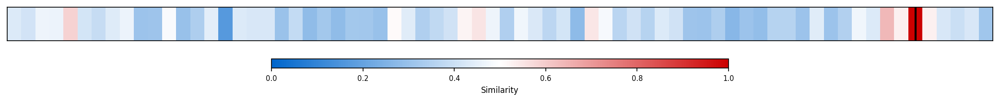
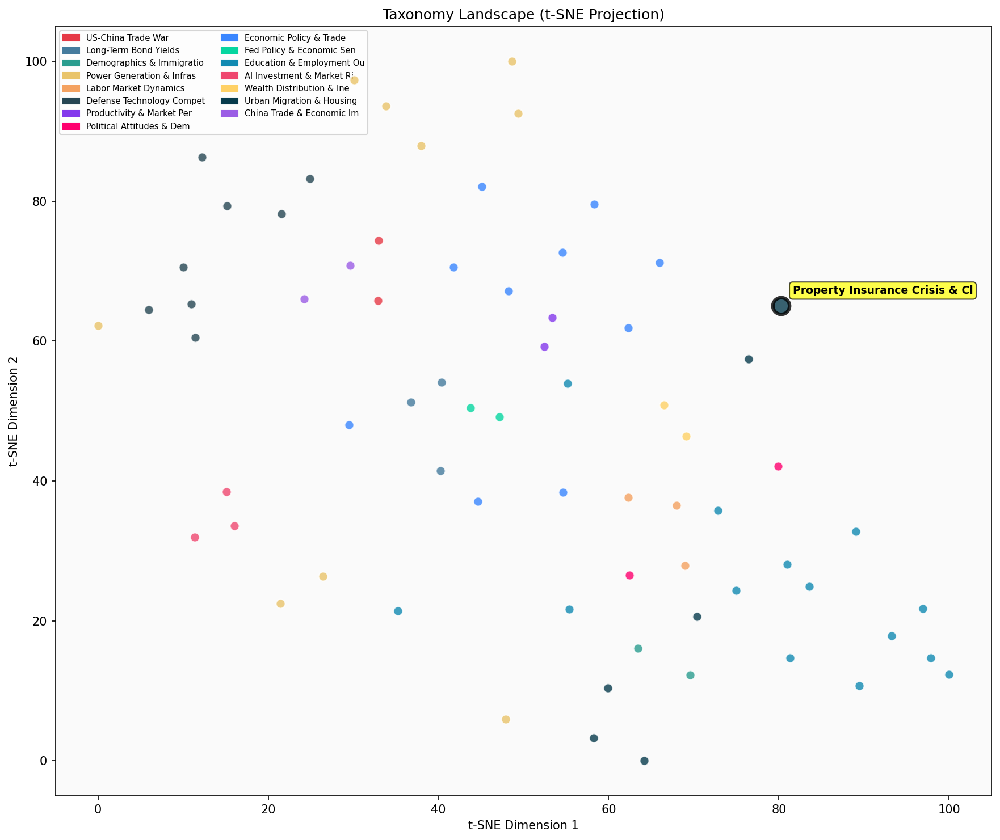

Description
This subcluster examines the intersection of climate-related risks and property insurance markets, focusing on how natural disasters and extreme weather events are destabilizing traditional homeowners insurance models. Articles analyze insurer financial performance data, regulatory filings, and catastrophe bond markets to track premium increases, coverage cancellations, and company insolvencies across climate-vulnerable states like Florida. Content includes WSJ analyses of insurer ratings, reinsurer loss estimates, and Congressional disaster relief funding patterns. Unlike sibling subclusters examining broader housing affordability or demographic shifts, this cluster specifically addresses insurance market mechanics and climate adaptation policies, including innovative responses like Florida's proposed property tax reforms as alternatives to traditional coverage models.
Similarity to All 70 Subclusters
Each cell represents a subcluster. Color intensity shows similarity (blue=low, red=high). Black line marks current subcluster position.
Relationship to Primary Clusters
Average similarity to each of the 15 primary clusters. Larger area = stronger relationship to that cluster.
Taxonomy Landscape
All 70 subclusters positioned by similarity (t-SNE). Current subcluster highlighted with label. Click to enlarge.
Network Connections
Current subcluster at center, connected to related subclusters. Line thickness = similarity strength.
Most Representative Articles
-
1. In 2023 insurers lost money on homeowners coverage in 18 states - more than 1/3 the country - up fro
-
2. The frequency of extreme weather events causing $1B or more in damages in inflation-adjusted terms h
-
3. Since 2022, 31 states have approved double-digit home insurance rate increases as insurers seek to p
-
4. Damages from US weather events that cost >$1B have risen from $20B annually during the 1980s to $95B
-
5. State-run “last resort” insurance programs have over $1T in potentially unfunded liabilities. Florid
Edge Cases (Boundary Articles)
-
1. While Florida home prices continue to decline as prices in most other states rise, @AzizSunderji argThis article is borderline because while it mentions Florida's declining home prices (which could be climate-related given Florida's exposure to hurricanes and flooding), it focuses primarily on general housing market pricing trends and explicitly argues that Florida's situation won't spread nationally due to state-specific factors, rather than examining the specific relationship between climate risks and property insurance markets. The content aligns more closely with broader housing market analysis than with the insurance crisis and climate risk intersection that defines this cluster.
-
2. The ongoing Los Angeles wildfires will cost somewhere between $52-57B, according to a preliminary esThis article is borderline because while it mentions wildfire damage costs (a climate-related risk), it focuses narrowly on a single cost estimate rather than examining the broader impacts on property insurance markets or how such disasters are destabilizing traditional homeowners insurance. The article's emphasis on quantifying financial losses from a specific event aligns more with general market pricing discussions than with the cluster's focus on systemic insurance market disruptions caused by climate risks.
-
3. While 12% of the $50B catastrophe bond market is exposed to wildfire risk, analysts project that losThis article is borderline because while it mentions wildfire risk and catastrophe losses (which are climate-related), its primary focus is on the specific financial mechanics of catastrophe bonds and reinsurance markets rather than the broader property insurance crisis affecting homeowners. The technical analysis of how losses will flow through different layers of the insurance/reinsurance structure makes it more about specialized financial instruments than the core issues of insurance availability and affordability for property owners facing climate risks.
Original Dendrogram